Strip Modifiers
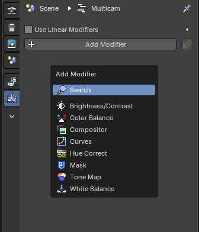
The Strip Modifiers tab allows non-destructive adjustments to video, image, and effect strips in the Video Sequence Editor (VSE). These modifiers enhance visual output without altering the original media.
| Entry | What it does |
|---|---|
| Breadcrumb | This shows what scene and what strip the active selected strip tab modifiers are showing. |
| Pin | This pins the active selected strip modifier stack so that when you select another strip, the modifiers won’t change and remembers the pinned strip modifiers. |
| Copy to Selected Strips | This copies the entire modifier stack to selected strips in the Sequencer Editor timeline. Opens a dropdown list of available modifiers to apply to the active strip. Ensures modifiers operate in linear color space. Recommended for accurate color grading and compositing workflows |
Strip Modifier Headers
Arrow Toggle
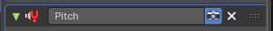
Expands or collapses the modifier panel. Used to show or hide parameter controls.
| Entry | What it does |
|---|---|
| Icon | The modifier icon that indicates what kind of modifier is placed in the stack. |
| Label | Displays the name of the modifier. Helps identify the effect applied to the strip. Double clicking this will rename the modifier. |
| Camera Icon | Hide/Show the modifier. This will be evaluated when activated. |
| Close Button (X) | Removes the modifier from the strip. |
Strip Modifier Masks
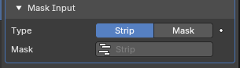
This sub-panel on strip modifiers is used to apply the effect modifier selectively by using a mask. This is useful for isolating regions of a strip—such as brightening only the subject or applying compositor effects to a specific area.
Type
Defines the source of the mask.
Options include:
- Strip: Uses the selected strip as mask input. This is typically based on luminance values, meaning the brightness of each pixel determines how strongly the modifier is applied, where white is full opaque influence and black is no influence.
- Mask: Uses an external mask from available Mask data. This allows referencing reusable and animated vector masks created in the Mask mode of the Motion Tracking Editor.
Mask
Displays the active mask name or source. Allows linking to any existing mask in the project when using Mask mode, or allows linking to any existing strip in the project when using Strip mode.
Mask Time
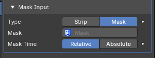
Controls how the mask timing aligns with the strip, only available when using the Mask mode.
| Entry | What it does |
|---|---|
| Relative | Synchronizes the mask’s timeline to the strip’s start frame. Useful when the mask should follow the strip’s position in the sequence. |
| Absolute | Keeps the mask’s original timeline position. Useful when the mask is designed to align with global frame numbers. |
Strip Modifiers
Each modifier includes its own set of parameters and can be toggled, reordered, or removed.
Brightness/Contrast
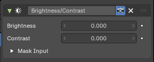
Applies basic luminance and contrast adjustments to video or image strips. Useful for correcting exposure, enhancing tonal separation, or preparing footage for grading.
| Entry | What it does |
|---|---|
| Brightness | Adjusts the overall lightness of the strip. Positive values brighten the image; negative values darken it. Default value is 0.000 (no change). |
| Contrast | Controls the difference between light and dark areas. Positive values increase separation, making shadows darker and highlights brighter. Negative values reduce contrast, flattening the image. Default value is 0.000 (no change). |
| Mask Input | Optional section for applying the node tree selectively. Supports both Strip and Mask modes, with time alignment options. |
Color Balance
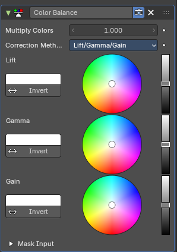
Applies tonal and chromatic adjustments to video or image strips. Useful for color correction, grading, and stylizing footage by manipulating shadows, midtones, and highlights.
Multiply Colors
Scales the overall color intensity.
A value of 1.000 applies no change.
Higher values amplify color saturation and brightness.
Correction Method
Defines the tonal model used for color adjustment.
Options include:
- Lift/Gamma/Gain: standard three-band model affecting shadows, midtones, and highlights.
- Offset/Power/Slope (ASC-CDL): alternative standard grading model used in some professional workflows.
| Entry | What it does |
|---|---|
| Lift | Adjusts the color and luminance of shadows. Includes a color wheel for chromatic shift and a vertical slider for brightness. Invert button reverses the effect. |
| Gamma | Adjusts the color and luminance of midtones. Includes a color wheel and brightness slider. Invert button reverses the effect. |
| Gain | Adjusts the color and luminance of highlights. Includes a color wheel and brightness slider. Invert button reverses the effect. |
| Mask Input | Optional section for applying the node tree selectively. Supports both Strip and Mask modes, with time alignment options. |
Compositor
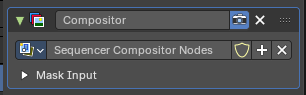
Applies a custom node-based compositing tree to a video strip.
Allows advanced image manipulation, effects, and corrections using Blender’s Compositor system—directly within the Sequencer.
Use
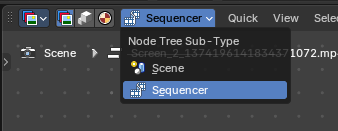
When a node group is selected or created, this switches the Compositor Editor to the active Compositor nodegroup when the Compositor Editor is in the Sequencer Mode. This Compositor Sequencer Mode is dedicated to editing and previewing the node tree used by the Sequencer Strip Modifier.
The selected tree becomes active for the strip and is used to process its image Nodegroup Input then Output to the Strip.
Notes: The modifier uses the output of the node tree to replace or enhance the strip’s image. The Viewer node in the Compositor can be used to preview results inside the Compositor workspace. Changes to the node tree affect all strips using it
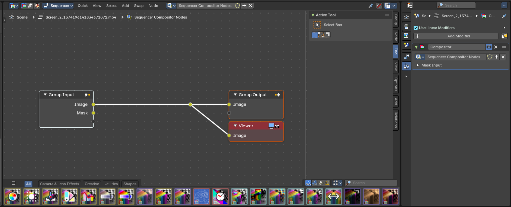
| Entry | What it does |
|---|---|
| Node Tree | Dropdown to select or create a node group. Selecting a tree activates it for the current strip. You can also force save, add and duplicate a new tree or remove current tree from the modifier. |
| Mask Input | Optional section for applying the node tree selectively. Supports both Strip and Mask modes, with time alignment options. |
Curves
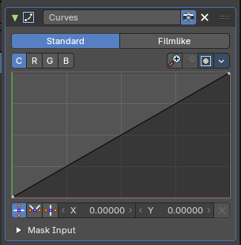
Applies tonal and color adjustments using editable curve graphs. Useful for precise control over brightness, contrast, and color balance across different tonal ranges.
Curve Type
Tabs to select the curve behavior model:
- Standard: applies direct curve mapping to input values.
- Filmlike: simulates film-style response curves for smoother tonal transitions.
| Entry | What it does |
|---|---|
| Channel | Buttons to select which channel is being edited: – C (Combined): affects all RGB channels together. – R (Red), G (Green), B (Blue): affect individual color channels. |
| Curve Graph | Displays the input-output mapping for the selected channel. The horizontal axis represents input brightness; the vertical axis represents output brightness. Points can be added and moved to shape the tonal response. A straight diagonal line means no change. |
Properties
Curve Field
Channel buttons

Clicking on one of the channels displays the curve for each.
C (Combined RGB), R (Red), G (Green), B (Blue).
Navigation elements
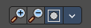
They are described from left to right.
Zoom in and out
The two buttons with the magnifying glass at it zooms in and out in the curve window.
Clipping Options
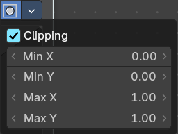
Clipping options. Set up clipping for the stroke.
Tools

Tools is a menu where you can find some curve related tools.
| Entry | What it does |
|---|---|
| Reset View | Resets the curve windows zoom. |
| Extend horizontal | Extends the curve before the first curve point and behind the last curve point horizontally. |
| Extend extrapolated | Extends the curve before the first curve point and behind the last curve point extrapolated. |
| Reset Curve | Resets the curve to the initial shape. |
Curve edit field
Create and tweak a Bezier curve that varies the input levels (X axis) to produce an output level (Y axis).
Selecting Points
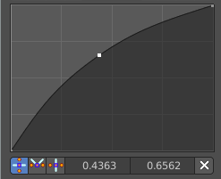
You can select curve points. This reveals two edit boxes for the x and y coordinate of this point.
Selected points can be moved around. Left click at them, hold the mouse button down and move them to a new location.
Adding Points

You can add new curve points by simply left clicking at the curve. Move the mouse to position them where you need it.
Curve point settings

When you have a point selected then you will reveal further settings at the bottom.
| Entry | What it does |
|---|---|
| Vector Handle | Set handle type to Vector. |
| Auto Handle | Set handle type to Auto. |
| Auto Clamped Handle | Set handle type to Auto Clamped. |
Mask Input
Optional section for applying the node tree selectively.
Supports both Strip and Mask modes, with time alignment options.
Hue Correct
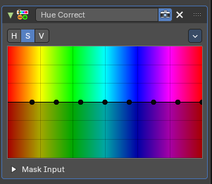
Applies hue-based adjustments to color properties across the spectrum. Useful for targeted color correction, saturation balancing, or stylized grading based on hue zones.
Level
H (Hue), S (Saturation), V (Value). Choose which curve you want to modify.
Tools menu

| Entry | What it does |
|---|---|
| Reset View | Resets the view. This menu item is here dysfunctional, you cannot view in or out. |
| Reset Curve | Resets the curve to defaults. |
| Auto Handle | Sets the handle for the curve points to Auto Handle. |
| Vector Handle | Sets the handle for the curve points to Vector Handle. |
| Auto Clamped | Sets the handle for the curve points to Auto Clamped. |
| X / Y | The x and y position of the currently selected curve point. |
| Delete Points | Deletes the currently selected curve point. |
Mask Input
Optional section for applying the node tree selectively.
Supports both Strip and Mask modes, with time alignment options.
Mask
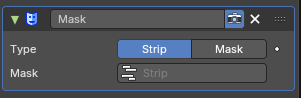
Provides mask data to node-based compositing trees used by the Compositor Modifier.
Useful for isolating regions of a strip for selective processing—such as color correction, blurring, or grading.
Type
Defines the source of the mask.
Options include:
- Strip: Uses the selected strip as mask input. This is typically based on luminance values, meaning the brightness of each pixel determines how strongly the modifier is applied, where white is full opaque influence and black is no influence.
- Mask: Uses an external mask from available Mask data. This allows referencing reusable and animated vector masks created in the Mask mode of the Motion Tracking Editor.
Mask
Displays the active mask name or source. Allows linking to any existing mask in the project when using Mask mode, or allows linking to any existing strip in the project when using Strip mode.
Mask Time
Controls how the mask timing aligns with the strip, only available when using the Mask mode.
| Entry | What it does |
|---|---|
| Relative | Synchronizes the mask’s timeline to the strip’s start frame. Useful when the mask should follow the strip’s position in the sequence. |
| Absolute | Keeps the mask’s original timeline position. Useful when the mask is designed to align with global frame numbers. |
Tone Map
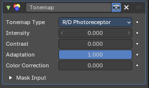
Applies tone mapping to compress or remap dynamic range in video strips. Useful for simulating HDR behavior, enhancing contrast, or preparing footage for display on standard screens.
Tonemap Type
Dropdown to select the tone mapping algorithm.
Options include:
- R/D Photoreceptor: Simulates the response of retinal photoreceptors to light and contrast.
Designed to mimic human visual adaptation to brightness.
Produces natural highlight roll-off and smooth tonal compression.
Best suited for footage with high dynamic range or strong lighting variation. - Rh_Simple Applies a simplified tone mapping curve. Less biologically accurate but faster and more predictable. Useful for stylized looks or when performance is prioritized over realism.
| Entry | What it does |
|---|---|
| Intensity | Controls the overall strength of the tone mapping effect. Higher values produce more pronounced compression of highlights and shadows. |
| Contrast | Adjusts the perceived contrast after tone mapping. Useful for restoring separation between tones. |
| Adaptation | Controls how quickly the simulated photoreceptor adapts to changes in brightness. Higher values simulate faster adaptation, affecting highlight roll-off and shadow recovery. |
| Color Correction | Applies additional color balancing after tone mapping. Useful for compensating shifts introduced by dynamic range compression. |
| Mask Input | Optional section for applying the node tree selectively. Supports both Strip and Mask modes, with time alignment options. |
White Balance
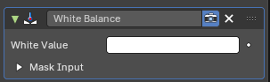
Adjusts the overall color temperature of an image by remapping what is considered “white.” Useful for correcting color casts caused by lighting conditions—such as overly warm indoor footage or cool daylight scenes.
| Entry | What it does |
|---|---|
| White Value | Defines the target color that should be treated as neutral white. Typically selected from the image using a color picker by mousing over and pressing E. Once set, the node shifts all colors accordingly to balance the image. |
| Mask Input | Optional section for applying the node tree selectively. Supports both Strip and Mask modes, with time alignment options. |
Audio Strip Modifiers
Echo
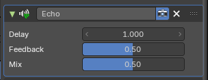
Applies a delay-based echo effect to sound strips in the Video Sequence Editor. Useful for creating spatial depth, rhythmic repetition, or stylized audio trails.
| Entry | What it does |
|---|---|
| Delay | Controls the time between the original sound and its repeated echo. Value is measured in seconds. Higher values produce longer gaps between repetitions. |
| Feedback | Determines how much of the echoed signal is fed back into the effect. A value of 0 means no repetition beyond the first echo. Higher values create multiple trailing echoes with diminishing volume. |
| Mix | Blends the original signal with the echoed signal. A value of 0 outputs only the dry (original) sound. A value of 1 outputs only the wet (echoed) signal. Intermediate values create a balanced mix. |
Equalizer
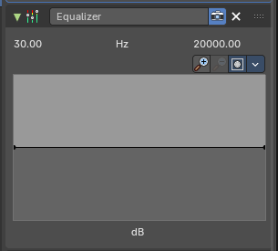
Applies frequency-based gain adjustments to audio strips in the Video Sequence Editor. Useful for shaping tonal balance, enhancing clarity, or creatively sculpting sound.
The panel displays a frequency graph ranging from approximately 30 Hz to 20,000 Hz, covering the full human hearing range.
The vertical axis represents gain in decibels (dB), allowing boosts or cuts to specific frequency bands.
| Entry | What it does |
|---|---|
| Frequency Curve | Editable graph that defines gain adjustments across the spectrum. You can draw or manipulate points to boost or reduce specific frequencies. |
| Magnifying Glass Zoom in/Out Buttons | Zooms into the frequency graph for precise editing. |
| Clipping Button | This toggle enables or disables clipping visualization in the frequency graph. When active, it highlights areas where gain adjustments may cause distortion or exceed safe audio levels. |
Tools Dropdown
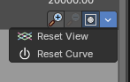
| Entry | What it does |
|---|---|
| Reset View | Resets the zoom and pan settings of the frequency graph. Does not affect the actual EQ curve—purely a visual reset. Useful when the graph becomes cluttered or zoomed too far. |
| Reset Curve | Clears all gain adjustments and returns the EQ curve to a flat line. Effectively disables the modifier’s influence until new edits are made. Recommended when starting fresh or undoing experimental changes. |
Pitch
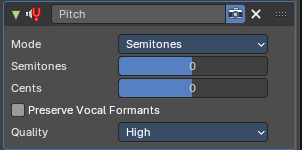
Shifts the pitch of an audio strip without altering its playback speed. Useful for retuning vocals, harmonizing music, or stylizing sound effects
Mode
Defines the unit of pitch adjustment.
Options include:
- Semitones: adjusts pitch in musical half-steps.
- Ratio: adjusts pitch by using a direct ratio.
| Entry | What it does |
|---|---|
| Semitones | Sets the pitch shift in semitone steps. Positive values raise the pitch; negative values lower it. |
| Cents | Adds fine-tuning to the pitch shift. Useful for microtonal adjustments or precise retuning. |
| Preserve Vocal Formants | Checkbox that maintains natural vocal characteristics during pitch shifting. Prevents unnatural artifacts when modifying speech or singing. |
Quality
Dropdown to select processing fidelity.
Options include:
- Low: prioritize low-quality pitch processing. Faster processing, lower accuracy.
- High: prioritize high-quality pitch processing. Slower but better preservation of audio quality.
- Consistent: prioritize consistency for dynamic pitch changes